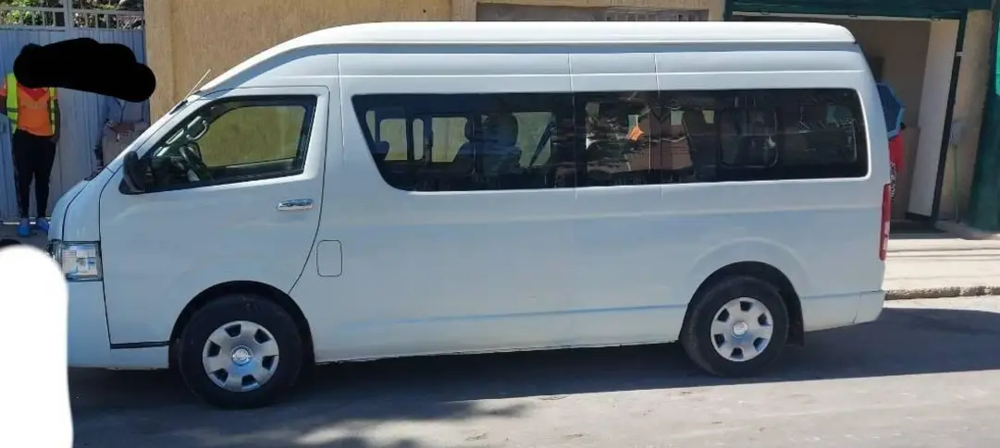

Golden Bus
is one of the best long distance bus companies in Ethiopia. Golden Bus operating between major cities as well towns in Ethiopia. They have Luxury, unique and comfort Buses for your Travel Options.
In Ethiopia, The company is one among the top competitor in the Passenger Transport Industry. They have unique ways of treating their customers for best traveler satisfactions.
Golden Bus Ethiopia Fleet Line
The company has luxury buses where travel needs meets luxury, comfort, and convenience. Their buses are fitted with on board entertainment and they have a well trained customer services personnel.
Below are some of the features which you may enjoy while you have chosen to travel with this Bus Company:
2 By 2 Reclining Seats With Enough Legrooms
Arm Rest On Every Seat For A Comfortable Travel
Television Services From Slip & Modern TVs
Music Played on Their Modern & Latest Sound System
Overhead Reading Lights & Speakers
Air Conditioning Services (A/C)
Free On Board Drinks & Snacks
Free WiFi Services For Internet Access
Golden Bus Ethiopia Service Line
The company provide daily Passenger transport services from the Capital and Business city of Addis Ababa To other town and cities within Ethiopia.
Passengers have an options to choose between the Morning and Afternoon departures when they opt to travel with this bus company.
Booking of tickets can be done at their offices located in each bus terminal and stops on a particular route. Also you can make a Ticket Booking by calling their customer line listed below this post.
Apart from Passenger Transfer services, Also the company provide Parcel transportation services to all destination of their routes within Ethiopia.
Golden Bus Ethiopia Routes
Addis Ababa To Jijiga
Addis Ababa To Harer
Addis Ababa To Dire Dawa
Addis Ababa To Mizan teferi
Addis Ababa To Metu
Addis Ababa To Hawassa
Golden Bus Ethiopia Offices & Contacts For Enquiry
Yeha City Center, Ras Mekonen St 05/06/07, Kirkos Addis Ababa
Call (0929) 312 935
Call +251 94 893 9393
Stadium Yeha Building, 2nd Floor
Addis Ababa,
Ethiopia
Call +251 93 953 5353
Sky Bus
Transport System Share Company is a first modern intercity coach transport company in Addis Ababa, Ethiopia.
It was established by more than 3400 shareholders with a registered capital of birr 60 million. Overview [ edit]
Founded: October 15, 2007
Headquarters: Addis Ababa
Parent: Sky Bus Transport System share company
Service area: Ethiopiae
Abay Bus
Ethiopia Fleet Line
They use a modern Chinese buses like Yutong & Golden Dragon to deliver it’s services to their customers.
All of their buses are newly imported from China under a specified conditions.
Their buses are designed to cater for their customer’s need by giving them what they do expect from this company.
Their buses have comfortable leather seats to give you a comfortable Journey all the way long to your destinations in Ethiopia and neighboring countries like Kenya.
Whenever you have chosen to travel with Abay Bus within Ethiopia or for Cross Boarder Travel, You will enjoy the following features & Services:
2 By 2 Reclining Seats With Enough Legrooms
Arm Rest For A Comfortable Journey
USB Charging Port On Every Seat
Television Services From Slim & Modern TVs
Free WiFi Services For Internet Access
Overhead Reading Lights & Speakers
Modern Sound System For Music & Listening
Free On Board Drinks & Snacks
Air Conditioning Services By A Modern A/C Machine
Abay Bus Ethiopia Service Line
The company offer daily Passenger transportation services from the Capital and Business city of Addis Ababa to other major cities and towns in Ethiopia as well as neighboring countries.
They do have a morning and afternoon departures in most of their stations to give you the best options of planning your journey.
The company also transport Parcels to all destinations of their routes at a fair prices depending on the nature and size of your Parcel.
Abay Bus Ticket booking can be made at their offices which are located in every bus terminals and stops. Also you can make a booking of your Tickets by calling their customer line listed below this post.
Habesha Bus
Services Is an Ethiopian registered Passenger transport company serving those people from the Northern parties of the country to other cities and town within Ethiopia.
They are in the transport Industry for some years now and they have managed to build trust among their customers.
The company boast themselves as the modern and comfort means of travel within Ethiopia. The company bring about a great competition in the Passenger transport industry among other service providers.
Habesha Bus Ethiopia Fleet Line
The company uses a new generation of the bus model those produced by the Chinese manufactures. All of their Unities are imported from China and their fleet are Modern Golden Dragon Buses of the latest edition.
You will not regret to travel with them, They know what their customers demand in the travel Industry.
The company bring about a huge innovation in the Ethiopian transport Industry by importing those buses with a modern on board facilities.
Habesha Bus has all the Ideal features and services every customer desire to use while they are traveling. Below are some of those amenities available on their buses:
2 By 2 Reclining Seats With Enough Legroom
USB Charging System On Every Seat
Slim Multiple Television For Entertainment
style=”text-align: center;”>Modern Sound System With Self Over Head Speaker
Free On Board WiFi Services
Air Conditioner With With Self Control Hub
On Board Drinks & Snacks
Habesha Bus Ethiopia Service Line
The company based on providing daily Passenger transport services among customers in Ethiopia.
They have a daily trips from The capital city of Ethiopia (Addis Ababa) to other cities and towns within the country.
Their Bus also travel to the Northern parties of the country where there is an origin of the Habesha people. They have a daily morning and afternoon departures in all terminals and stops.
Also Habesha Bus transport Parcels at a fair prices which can be affordable to every one.
You may make a booking of your tickets at all stations where they have their offices and in the city centers where they have also their individual offices. To provide a modern services.
The company also offer Online Booking Services by getting in Touch with them through those contact numbers listed below this post.